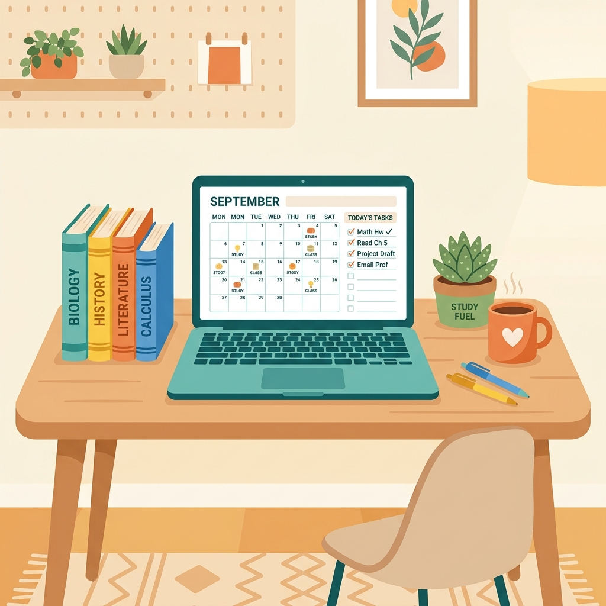

StudyHub brings tasks, notes, and study timers into one simple, clean space. Built by students, for students, to help you stay focused and ace your exams.

Simple tools designed to solve real classroom challenges. No complicated setups, just pure productivity.
Keep track of syllabus assignments, exams, and project milestones. Group them by course and set custom reminders so you never miss a deadline.
Use interval-based studying to stay locked in. Set study blocks, schedule short breaks, and monitor how many hours you dedicate to each subject.
Create shared checklists and project timelines with study groups or project partners. Keep everyone aligned and divide tasks effortlessly.
Don't wait to download the app to start studying. Give our core Pomodoro tool a spin directly from this page. Set your timer, start focusing, and see how much you can get done in 25 minutes.
Click start to begin focusing!
Here is what students on our campus are saying about using StudyHub for their courses.
"Before StudyHub, my task tracking was scattered between three notebooks and random phone notes. Having assignments and a study timer in one place changed the game for exam week."
"The group task boards made coordinating our computer science capstone project incredibly straightforward. No more text chains asking 'who is doing what'."
"I love the Pomodoro timer logs. Being able to see that I studied 4 hours for chemistry gives me a huge confidence boost going into exams."